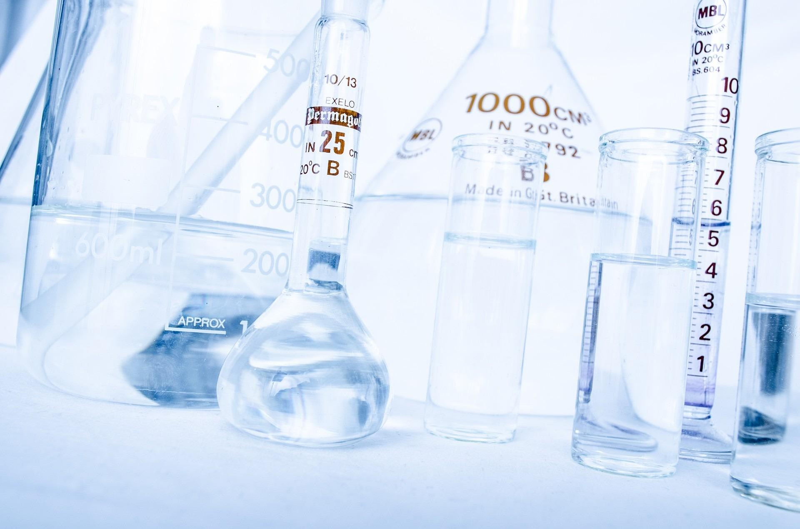

Thermodynamics / Episode 01
Why do carbonated drinks lose their fizz?
A bottle of soda is a tiny pressure vessel. I’m looking at what happens when dissolved carbon dioxide gets a chance to escape.
Read the reflection00 A personal learning project
I research one chemical phenomenon every two weeks and explore the chemical-engineering ideas behind it.

The good stuff is usually hiding in the detail. This is my notebook for finding it.
01 Featured episode
See the archiveThermodynamics / Episode 01
A bottle of soda is a tiny pressure vessel. I’m looking at what happens when dissolved carbon dioxide gets a chance to escape.
Read the reflection02 What I’m looking for
Energy, pressure, and equilibrium.
Structure, strength, and softness.
How molecules move around.
Small changes, new substances.
03 Why this exists
Before I commit to chemical engineering in college, I want to try the parts that sound most exciting: asking good questions, following the evidence, and making a complicated idea feel understandable.
About the project